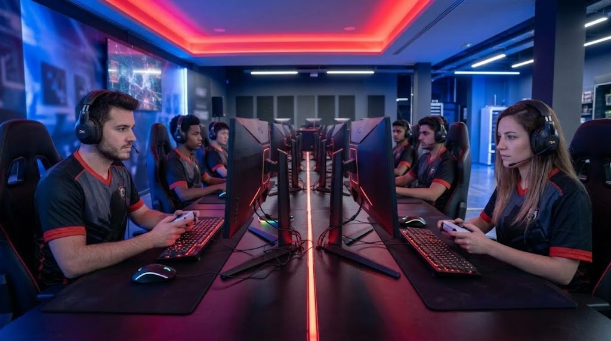

Laurdenetako kurtsoa ezarrita: lau norgehiagoka erabakigarri
09-11-2026
Zortzimilaren ostean, txapelketak zortzi jokalari ditu bizirik. Bihar jokatuko dira laurdenak: Vegetta777 eta Peereira7, Faker eta Ninja, Davo Xeneize eta RDJavi, eta AuronPlay eta R3gu3. Ezkerreko aldean, Vegetta777-k Willyrex garaitu du 7-5 eta Faker Rokko80-ren aurka nagusitu da 4-2. Eskuinekoan, Davo Xeneizek eta AuronPlayk ere txartela eskuratu dute, oso emaitza estuekin.
Zaleek aurreikusten dute Faker eta Ninjaren arteko partida izango dela gehien kontatuko duena, bi jokalariek sekulako giroa pizten dutelako.
Ikusi sailkapena